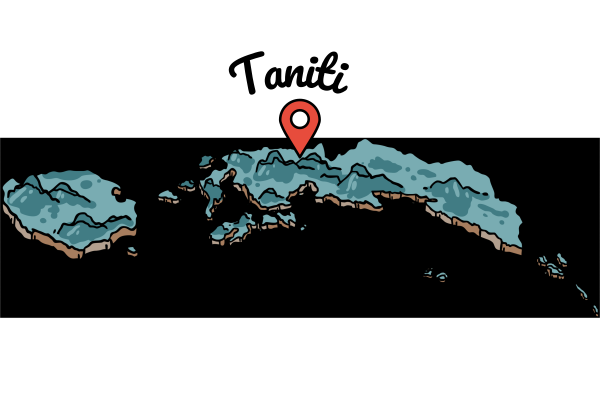

Visitors' Information Hub
Planning your trip to Taniti? Here’s everything you need to know about where to stay, what to eat, and how to get around—so you can focus on enjoying your island adventure! Choose a tab to start your research.
